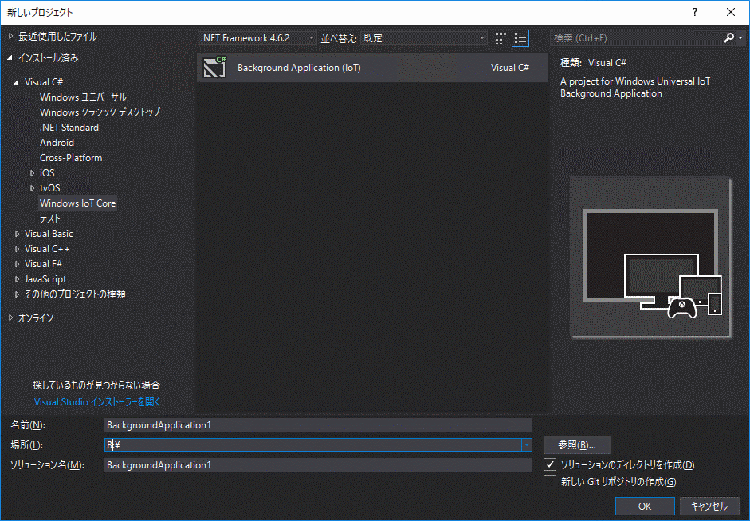
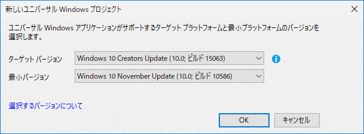
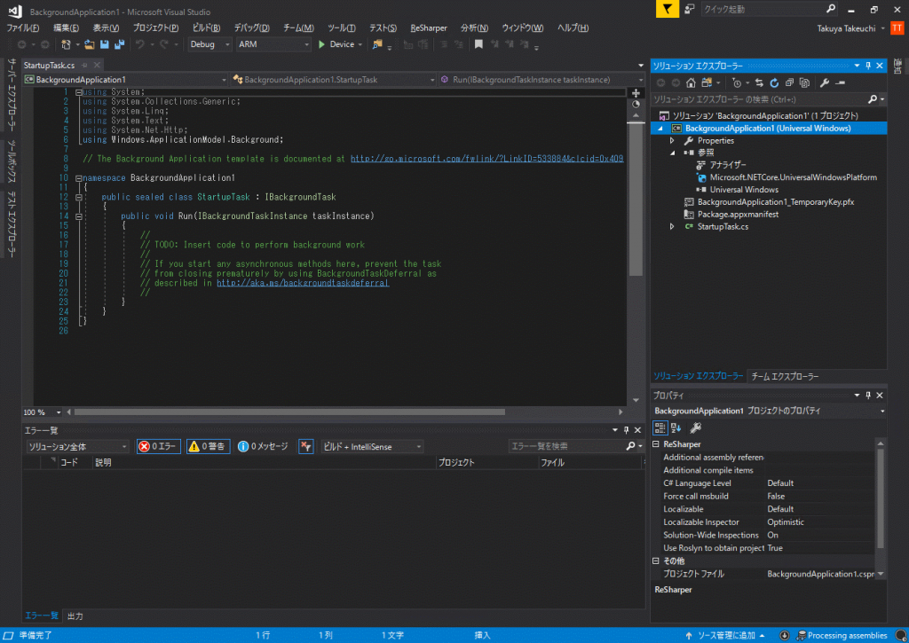

Introduction
Visual Studio上で、しかもC#を使って、IoTデバイス上で動作できるアプリが簡単に作れる!!っていうのが、Microsoftのエコシステムの強みなんですけど、Visual Studioのどこから作成できるのかがわかりにくいのでメモ。
Instructions
Application Types
まず前提として、IoTデバイス上で動作するアプリは
- GUIあり (UWP)
- Foreground Apps
- GUIなし(UWP)
- Background Apps
- 非UWP (C++のみ)
- Non-UWP Apps
の3種になります。 パフォーマンスとか考えると、C++の非UWPって気もしますが、そもそもパフォーマンス云々ならWindows IoTなんか選択しません。 Windows IoTを選ぶのは、開発効率の高さ、既存資産の流用、多数の言語サポートなのですから。
Foreground Apps
で、前述の通り、GUIなら選択肢はForeground Appsしかないといっています。 Developing foreground applicationsによれば、
All of the standard UWP languages and project templates are fully supported on IoT Core.
訳: 全ての基本的なUWPの言語及びプロジェクトテンプレートはIoTコア上で完全にサポートされます。
とあるので、普通にUWPアプリを作ればそれで動くはずです。
Background Apps
問題は、GUIを使わないタイプ。 Background Appとよばれる、このタイプはコンソールアプリなのですが、従来のMainメソッドから構成されるものとは異なり、どちらかといえばサービスアプリケーションに近い印象を受けます。そもそもコンソール画面は表示されないので、コンソールアプリとも言えませんが。 Background Appsを作成するには、Windows.ApplicationModel.Background.IBackgroundTask インターフェイスを継承したクラスを作成するだけです。 そのクラスはタスクとして扱われ、バックグラウンドで実行されるという仕組みです。 サンプルを見る限りは非常に簡単ですが、ここはテンプレートを利用しましょう。 というか、MSDNにもそう書いてあります。 でも、Visual Studioをインストールしてもテンプレートは存在せず、Visual Studio Marketplaceから入手せよとのこと。えぇ…
入手したインストーラを実行し、新しいプロジェクトを開くと、Windows IoT Coreが追加されます。

{kind=link}

ターゲットのWindows 10のビルドを選択します。
{kind=link}
作成されたプロジェクトは、StartupTask.csというソースが一つ(+他の細々したもの)というシンプルなものです。

{kind=link}
これを元に作成していけば、アイデアを形に出来るでしょう。きっと。